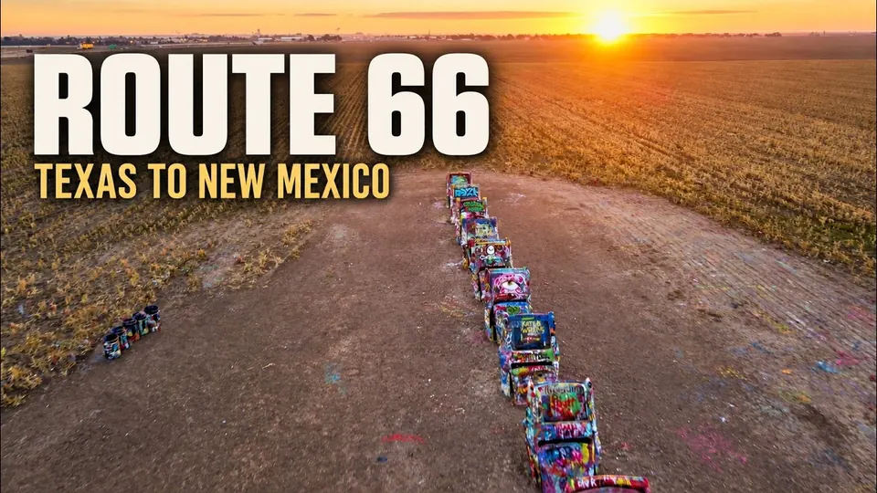

Destination
Route 66
Stops along the Mother Road in Texas, Oklahoma, Missouri, New Mexico, and Arizona. The films have not covered every mile — yet.
Films
Shorts
Subscribe on YouTube
Watch these films, and new ones as they are published, on the Totin My Pack channel.